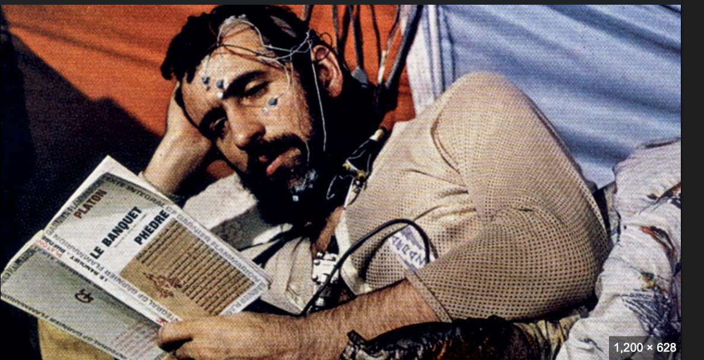

<style>
    .hashtags {
        text-align: center;
        max-width: 800px;
        margin: 20px auto;
        padding: 10px;
    }

    .hashtags a {
        display: inline-block;
        margin: 5px;
        padding: 8px 12px;
        font-size: 0.9rem;
        font-weight: bold;
        text-decoration: none;
        color: #fff;
        background-color: #264653;
        border-radius: 20px;
        transition: background 0.3s ease;
    }

    .hashtags a:hover {
        background-color: #001f3f;
    }

    body {
        font-family: Arial, sans-serif;
        margin: 0;
        padding: 0;
        background-color: #f5f5f5;
        color: #333;
    }

    h2 {
        font-family: "Arial", sans-serif;
        font-size: 2.5rem;
        font-weight: bold;
        color: #001f3f;
        margin-top: 20px;
        text-align: center; /* Center the title */
    }

    p, li {
        font-family: "Arial", sans-serif;
        font-size: 1rem;
        line-height: 1.8;
        text-align: justify;
        margin: 20px auto;
        max-width: 800px;
    }

    .container {
        display: flex;
        flex-direction: column;
        align-items: center;
        padding: 20px;
    }

    img {
        margin: 20px auto;
        border-radius: 8px;
        width: 100%;
        max-width: 800px;
        height: auto;
        box-shadow: 0 4px 8px rgba(0, 0, 0, 0.2);
    }

    .text-muted {
        font-weight: bold;
        color: #264653;
    }

    .references {
        max-width: 800px;
        margin: 20px auto;
    }
</style>

<section id="project-details">
    <div class="container">
        <!-- Page Header -->
        <h2>The Hidden Challenge of Space – Protecting Psychological Health</h2>

        <!-- First Image and Description -->
          

        <p>
            When we talk about long-duration space missions, our minds often turn to rockets, fuel, radiation, and engineering. Yet one of the biggest challenges is less visible: <strong>the human mind</strong>.
        </p>
        <p>
            Space is not just a hostile physical environment; it is also a profound psychological test. Astronauts face isolation, confinement, disrupted circadian rhythms, and communication delays. Over time, these conditions can alter everything from <strong>mood and cognition to gene expression and hormonal balance</strong>.
        </p>
        <p>
            Research shows that long-term spaceflight influences not only our neurochemistry but also our <strong>genetic factors</strong>. Stress, microgravity, and radiation can affect gene regulation, potentially altering how the body responds to fatigue, depression, and immune challenges. What might look like a small stressor on Earth can become a major destabilizer in orbit or on Mars.
        </p>

        <strong>Lessons from Michel Siffre’s Cave</strong>
        <p>
            The pioneering work of French geologist <strong>Michel Siffre</strong> offers a remarkable window into this challenge. In 1972, Siffre descended into a cave 440 feet underground, where he lived completely alone for 180 days. He had no natural light, no clock, and no human contact. His aim was to understand how the human mind and body behave when deprived of natural time cues.
        </p>
        <p>What unfolded is now legendary in isolation research:</p>
        <ol>
            <li><strong>Disrupted sense of time</strong> – Within weeks, Siffre’s internal clock drifted. Believing that one day had passed, he often discovered that nearly two had gone by. His body abandoned the normal 24-hour rhythm and shifted into a cycle of 36 hours awake, followed by 12 hours asleep.</li>
            <li><strong>Cognitive strain</strong> – Without external cues, his speech slowed, memory faltered, and concentration slipped. He even experienced hallucinations.</li>
            <li><strong>Psychological effects</strong> – To cope with isolation, Siffre created artificial social interactions—talking to insects, conversing with himself, and inventing imaginary companions.</li>
            <li><strong>Distorted reality</strong> – By the end of his stay, he believed only 151 days had passed, when in fact it had been 180. His perception of time itself had collapsed.</li>
        </ol>

        <strong>Why This Matters for Space</strong>
        <p>
            What Siffre experienced in the depths of a cave is a mirror of what astronauts may face on the Moon, on Mars, or during the nine-month voyage through deep space. On the International Space Station (ISS), astronauts avoid such psychological drift through strict schedules and carefully designed lighting systems. Yet during interplanetary travel, with no sunrise or sunset and no real-time communication with Earth, the risk of psychological destabilization is immense.
        </p>
        <p>
            Isolation does not only distort time; it can <strong>erode mental well-being, disrupt biological rhythms, and undermine mission safety</strong>. A misaligned body clock, confusion during emergencies, or prolonged depression could jeopardize not just the individual astronaut but the entire crew.
        </p>

        <strong>Making Resilience Mission-Critical</strong>
        <p>
            If we are to send humans on multi-year journeys, their <strong>psychological resilience</strong> must be treated as mission-critical—just as vital as oxygen, water, or food. Lessons from Siffre’s cave show us that without the right tools, the human mind can become as fragile as any piece of spacecraft hardware.
        </p>
        <p>
            At <strong>KinKinetics</strong>, we recognize that supporting the mind in extreme environments is not a side issue—it is the foundation for successful exploration. By combining insights from decades of isolation research with modern neurotechnology, we are preparing humans to not just survive in space, but to thrive.
        </p>

        <!-- Hashtags -->
        <div class="hashtags">
            <a href="https://www.google.com/search?q=SpaceMedicine" target="_blank">#SpaceMedicine </a>
            <a href="https://www.google.com/search?q=Neuroscience" target="_blank">#Neuroscience</a>
            <a href="https://www.google.com/search?q=AstronautHealth" target="_blank">#AstronautHealth</a>
            <a href="https://www.google.com/search?q=IsolationResearch" target="_blank">#IsolationResearch</a>
            <a href="https://www.google.com/search?q=HumanResilience" target="_blank">#HumanResilience</a>
            <a href="https://www.google.com/search?q=FutureOfAstronauts" target="_blank">#FutureOfAstronauts</a>
            <a href="https://www.google.com/search?q=PsychologicalHealth" target="_blank">#PsychologicalHealth</a>
        </div>

        <!-- References -->
        <div class="references">
            <h3>References</h3>
            <ol>
                <li>Siffre, M. (1972). Isolation experiment: 180 days underground to study circadian rhythms and psychological resilience.</li>
                <li>NASA Human Research Program – Behavioral Health and Performance, Circadian Rhythms Research.</li>
            </ol>
        </div>
    </div>
</section>
